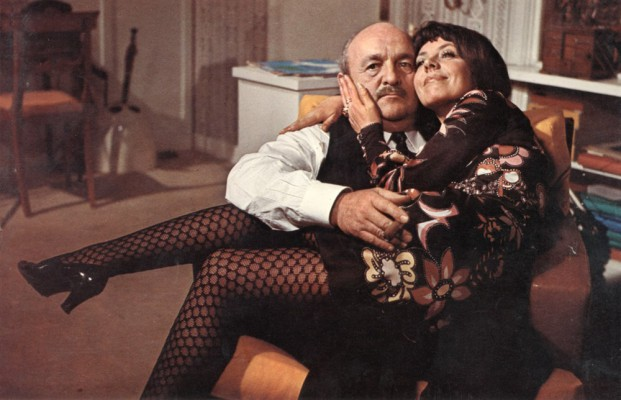

#11891 Der Große Blonde mit dem schwarzen Schuh
Alternativ: The Tall Blond Man with One Black Shoe (Englischer Titel)

 IMDB-Wertung: 7.3 / 10
IMDB-Wertung: 7.3 / 10  Metascore: 0
Metascore: 0 
Der harmlose Musiker Francois Perrin gerät ohne sein Wissen in das Kreuzfeuer sich befeindender Agenten, als er am Flughafen als angeblicher Spion identifiziert wird, weil er einen braunen und einen schwarzen Schuh trägt (aufgrund seiner Schusseligkeit). Seine Wohnung wird bald Ziel eines gewaltigen Lauschangriffs und eines tödlichen Agentenkrieges. Nur einer bekommt davon nichts mit: Der ahnungslose Perrin, dessen normales Leben natürlich doppelt verdächtig wirkt.
Jahr: 1972
Dauer: 85 Minuten
FSK: 12
Land: Frankreich Studio: Tobis FilmkunstTonspuren: DD2.0 - ,
Untertitel: Deutsch, Französisch,
Auflösung: SD (720x576) Größe: 4843 MB
Genre: Komödie, Mystery
Regisseur: Yves Robert
Drehbuch: Yves Robert, Francis Veber, Francis Veber
Soundtrack: Vladimir Cosma
Darsteller:
 Pierre Richard als François Perrin
Pierre Richard als François Perrin-  Bernard Blier als Colonel Bernard Milan
 Jean Rochefort als Le colonel Louis Marie Alphonse Toulouse
Jean Rochefort als Le colonel Louis Marie Alphonse Toulouse- Mireille Darc als Christine
- Colette Castel als Paulette
- Jean Saudray als Pouchet
- Maurice Barrier als Chaperon
 Robert Dalban als Coco, le faux livreur
Robert Dalban als Coco, le faux livreur- Paul Le Person als Perrache
 Jean Carmet als Maurice
Jean Carmet als Maurice- Claudine Beccarie als (uncredited)
 Jean Bouise als Le ministre (uncredited)
Jean Bouise als Le ministre (uncredited) Michel Duchaussoy als Capitaine Cambrai (uncredited)
Michel Duchaussoy als Capitaine Cambrai (uncredited)- Yves Robert als Le chef d'orchestre (uncredited)
- Jean Obé als Botrel
- Robert Castel als Georghiu
- Roger Caccia als M. Boudart
- Arlette Balkis als Madame Boudart
- Tania Balachova als La mère de Toulouse
- Catherine Obe als
- Bernard Charlan als Le cycliste
- Stéphane Bouy als Agent secret prisonnier
- Jean-Michel Molé als L'homme aux poupées russes
- Marcel Gassouk als Florist van driver
- Gérard Moisan als
- Bruno Oppe als
- Xavier Gélin als Young man in car hearing the toilet flushing in the florist van (uncredited)
- Gérard Majax als L'espion magicien (uncredited)
Datei: X:\3-Trilogie(G-M)\Große Blonde\Große Blonde mit dem schwarzen Schuh, Der (1972, FSK12, 720x576).mkv seit 08.10.2019
Festplatte: HD Collection-2(A-Z)-3(A-M)
 Alle Filme aus Gruppe '3-Trilogie(G-M)\Große Blonde'
Alle Filme aus Gruppe '3-Trilogie(G-M)\Große Blonde'
- Große Blonde mit dem schwarzen Schuh, Der (der aktuelle Film)